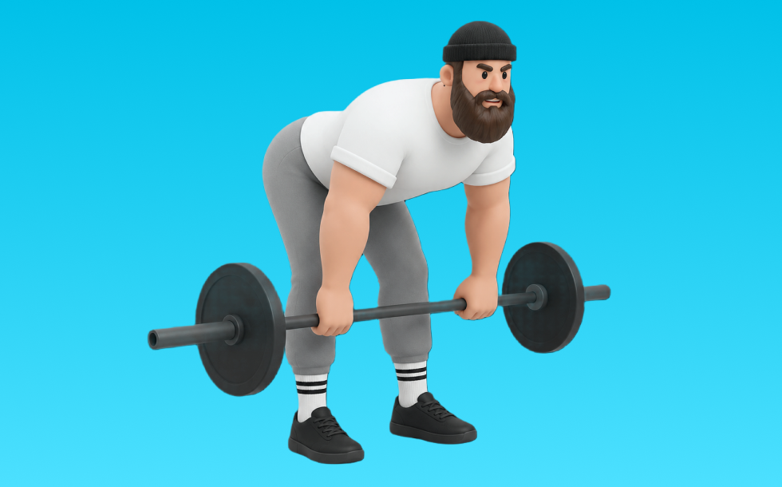

スティフレッグデッドリフト

スティフレッグデッドリフトとは、バーベルを使って「股関節で持ち上げる」動作で臀筋、ハムストリング、脊柱起立筋を鍛える種目です。高重量を扱いやすく、筋力を伸ばしやすいのが特徴で、背すじを保ち、股関節で持ち上げてゆっくり下ろす動作を繰り返します。下半身の筋力・筋量アップが期待できます。
- 対象部位
- 脚
- 器具
- バーベル
- 記録形式
- 重量・回数
- 別名
- sldl
YouTube動画
-
【中上級者向け】体の後面を鍛える”スティッフレッグデッドリフト”フォーム解説
-
【初心者】スティッフレッグデッドリフトの効果的なやり方 | ハムストリングに効かせる！【ビーレジェンド プロテイン】
-
300kgの男が教えるデッドリフトが強くなるスティフデッドリフト徹底解説
-
スティフレッグデッドリフトの正しいやり方【腰部強化】
-
【スティッフレッグデッドリフト】太もも裏に効くコツ〜重量・回数など徹底解説
-
そのデッドリフト間違ってます。デットリフトの正しいやり方はこれです。
-
【デッドリフト】絶対に効く正しいやり方を解説致します。広背筋・僧帽筋そして脚に聞かせるテクニックありです。
-
筋トレ初心者に絶対見てほしいデッドリフトの全て
-
デッドリフトで腰が疲れずにハムストリングスに効くやり方や練習法！スティッフレッグドデッドリフトの解説＆実演
-
デッドリフトとスティフレッグドデッドリフトの正しい方法と違い
-
ルーマニアンデッドリフトのやり方｜ハムストリングスを強く太くする！【筋トレ】
-
10分で貴方のデッドリフトを爆上げさせます。
YouTubeショート
-
ルーマニアンデッドリフトとスティフレッグデッドリフト#脚トレ #尻トレ #デッドリフト
-
スティッフレッグデッドリフト（Stiff Leg Deadlift）のやり方とフォーム
-
【筋トレ2か月目】デッドリフト100kg上がったんですけど、これくらいの腰がちょっと曲がっちゃうのはいいの？ #ジム #筋トレ #デッドリフト #フォーム改善
-
持田選手に2種類のデッドリフトについてレクチャーしていてもらいました！次はどの種目の解説をやってほしいかコメントしてね！#筋トレ #volix #トレーニング #ちょこっと惜しい
-
デットリフトは筋肥大にいいですか？ #デットリフト #筋肥大 #サム切り抜き #samgetitright #筋トレ #フィットネス #ボディビル #ジム #筋肉 #ジョージ #メンズコーチ #兄弟
-
スティッフレッグデッドリフト
-
正しいルーマニアンデッドリフト4つのポイント #筋トレ
-
【スティフレッグデッドリフト】3つのポイント！後ろ腿を鍛える！#筋トレ#フィットネス#スティフレッグデッドリフト#デッドリフト
-
『自重筋トレ100の基本』 スティッフド・デッドリフト
-
鬼の背中トレ🔥 デッドリフトのやり方 #筋トレ #背中トレ #デッドリフト #マッチョ #筋肉社長
-
スティフレッグド・デッドリフト／背筋／筋トレ実践講座
-
【SGIR】ルーマニアンデッドリフト意識すべき点
-
デッドリフトをやった方が良い理由をデッドリフトをやりながら解説します！
-
デットリフト80kgで充分#筋トレ #shorts
-
ハムストリングスを鍛えるスティフレッグデッドリフト(バーベル版)【糸井トレーナー】
-
ハムを集中的に刺激！スティフレッグデッドリフト(ダンベル＆バーベル)【糸井トレーナー】
-
ジョーFitにデッドリフト200kg挙げる方法聞いてみた#shorts
-
デッドリフト230kg〜ウッディ上田全盛期〜
-
ルーマニアンデッドリフトよくあるエラー #デッドリフト
-
【30秒】デッドリフトがマジで上手くなる練習方法#shorts
-
【比較】ルーマニアンデッドリフトVSデッドリフト #セミパーソナルジム #トレーニング #くびれ
-
プロに聞く！デッドリフトで腰を痛めない方法！
-
正しいデッドリフトのやり方
-
SLDL vs コンベンショナルデッドリフト
-
ロープで行うスティフレッグデッドリフト(ハムストリングス・ヒップアップ)【糸井トレーナー】
-
【脚痩せ‼️必見‼️】スティフレッグデッドリフト！
-
正しいルーマニアンデッドリフト教えます！
-
スモウデッドリフトはチートなのか #デッドリフト#ボディビル #フィットネス #ジム #筋肉 #ステロイド #パワーリフティング
-
ルーマニアンデッドリフトとスティッフレッグドデッドリフトの違い
動作方法
- 背中を中立に保ち、股関節から動き始める
- もも裏の張りを感じる位置まで下ろす
- 足裏で床を押して立ち上がる
動作ポイント
- 背中を丸めない
- 膝を伸ばしきらない
- バーや重りを体から離しすぎない
ワンポイントアドバイス
- ウォームアップで股関節と足首を動かす
- 高重量の日はセーフティ設定を確認する
目的別回数設定
目的や体力に応じた一般的な目安です。無理のない範囲で調整してください。
- 筋力アップ
- 1〜5回
- 筋肥大
- 6〜12回
- 持久力アップ
- 13〜20回
YouTube動画について
動画はYouTubeの公開情報をもとに表示しています。内容は投稿者によるもので、Biggrによる監修ではありません。
アプリを入手
筋トレやトレーニングの記録はBiggrにお任せください。今すぐ無料で使い始められます。